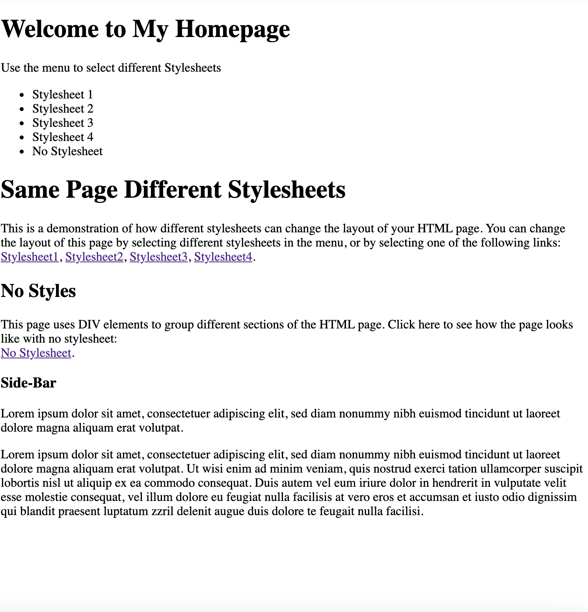
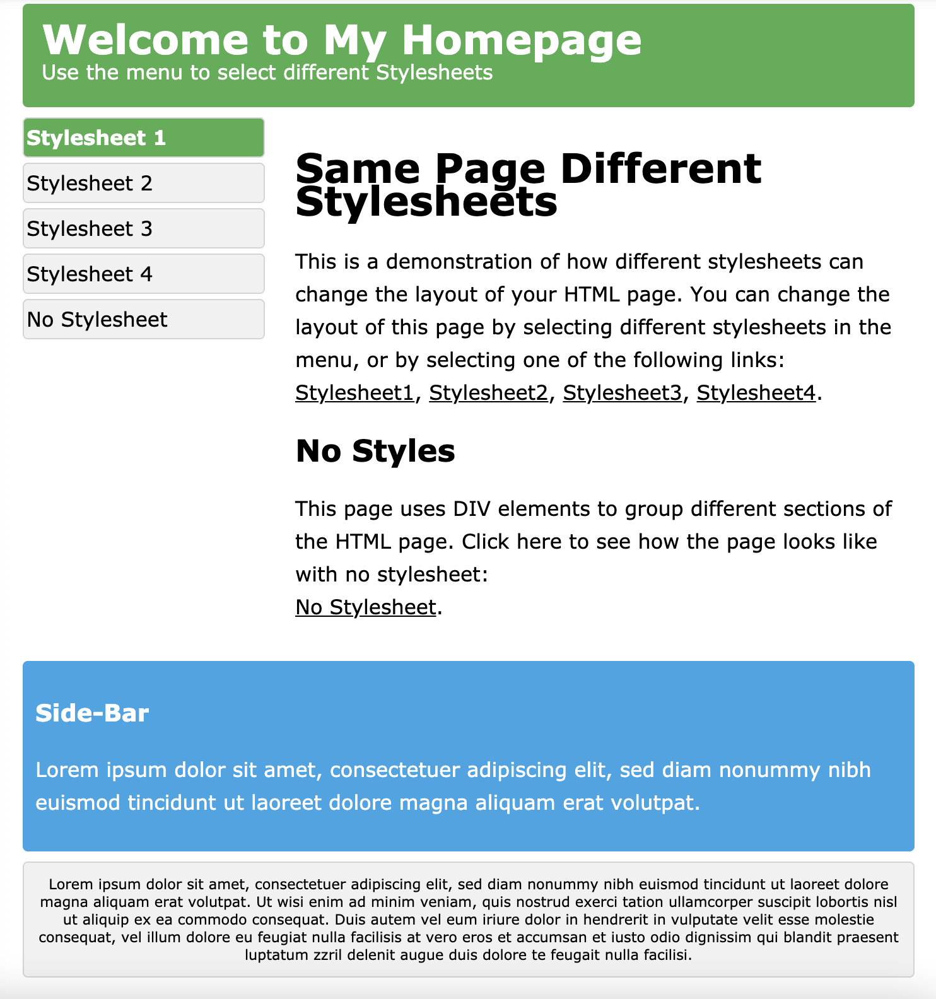
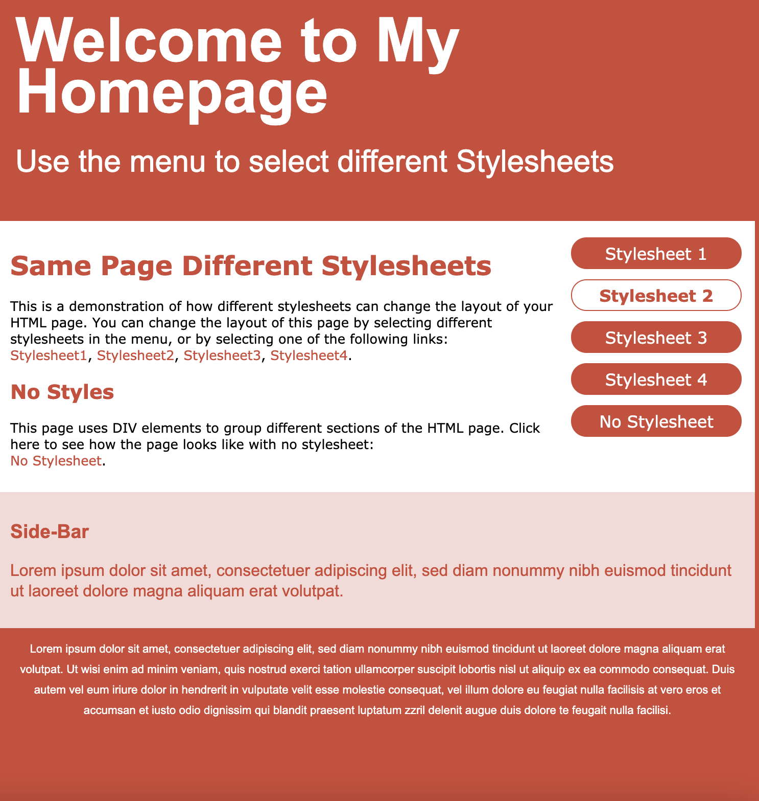
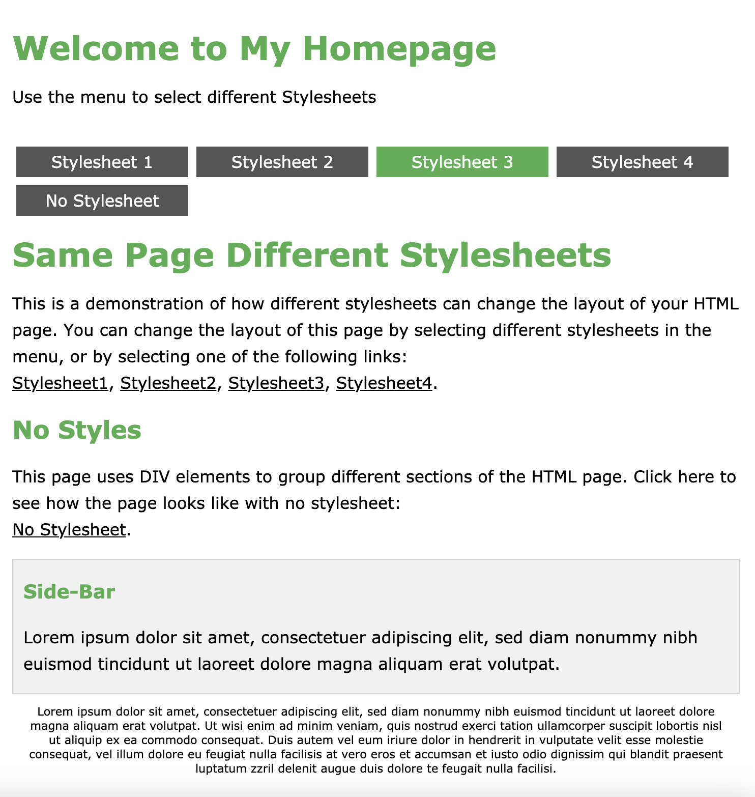
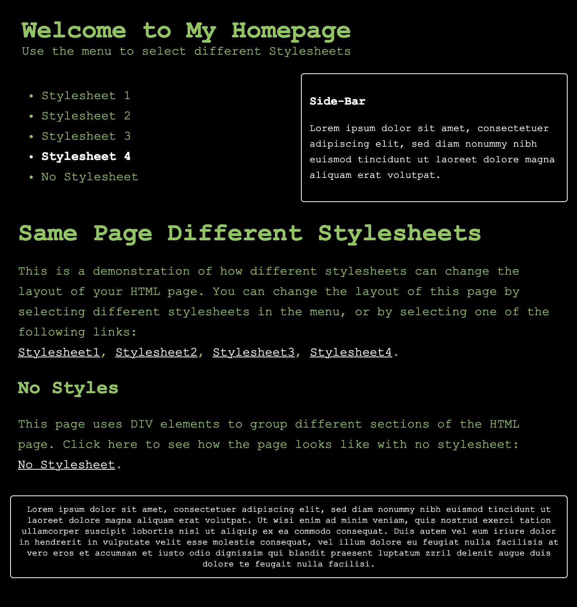

CSS describes how HTML elements should be displayed on screen, paper, or in other media
CSS allows us to add color, layout, style, and design to our webpages
If HTML describes the content of a website, CSS describes the presentation and appearance of a website
CSS saves us a LOT of work- it can control the layout and style of multiple webpages at once!
External stylesheets are stored in CSS files
What does CSS look like?
Look at the following site examples below. This is ONE HTML page displayed with four different stylesheets. All contain the same HTML content, but are styled differently depending on the CSS Stylesheet used:
No stylesheet

Webpage with NO CSS stylesheet applied
Stylesheet 1

Webpage with Stylesheet 1
Stylesheet 2

Webpage with Stylesheet 2
Stylesheet 3

Webpage with Stylesheet 3
Stylesheet 4

Webpage with Stylesheet 4
As you can see, by creating just a few different stylesheets, we can dramatically alter the same HTML page!
Why Use CSS?
CSS is used to define styles for your webpages, including:
Design
Layout
Variations in display for different devices and screen sizes
CSS also solved a big problem:
HTML was NEVER intended to contain tags to FORMAT a web page
HTML was created solely to describe the content of a webpage- adding tags like "font" and color attributes caused a nightmare for web developers
CSS' creation resolved this style/ formatting issue when it took over!